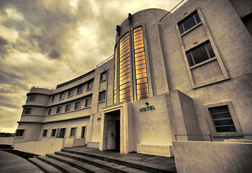
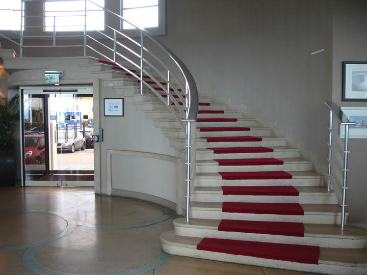
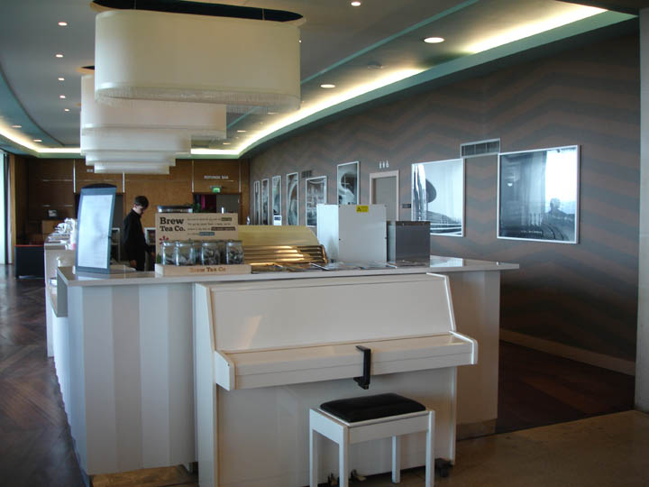
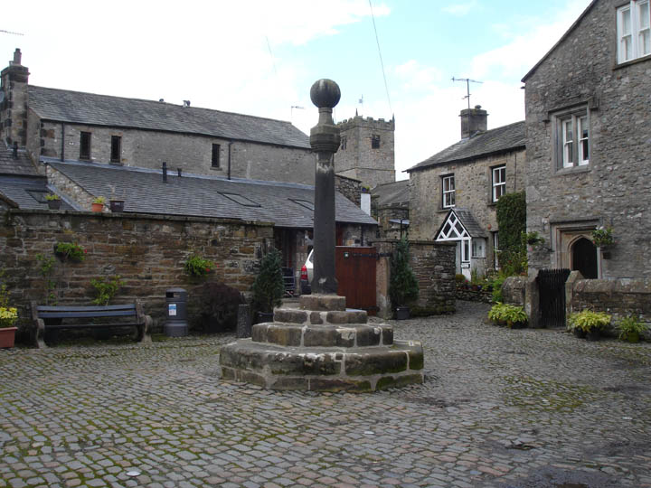
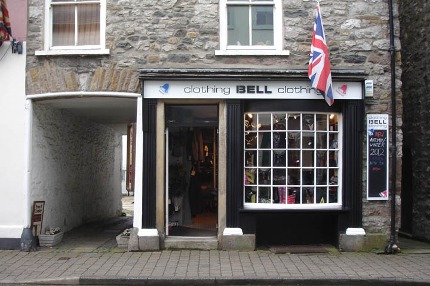
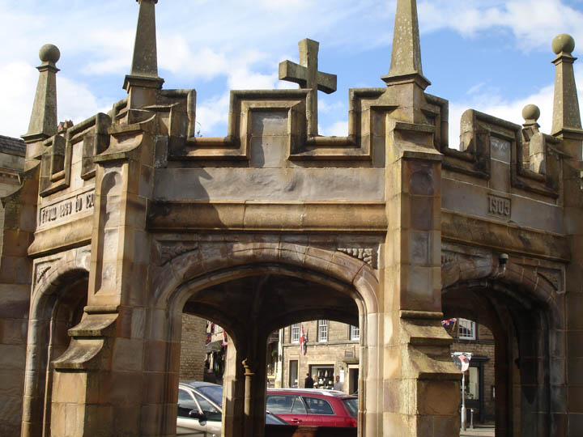
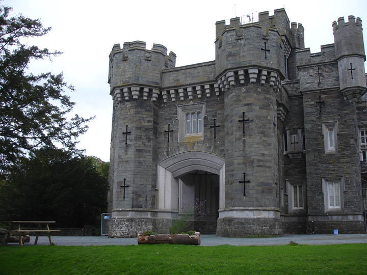
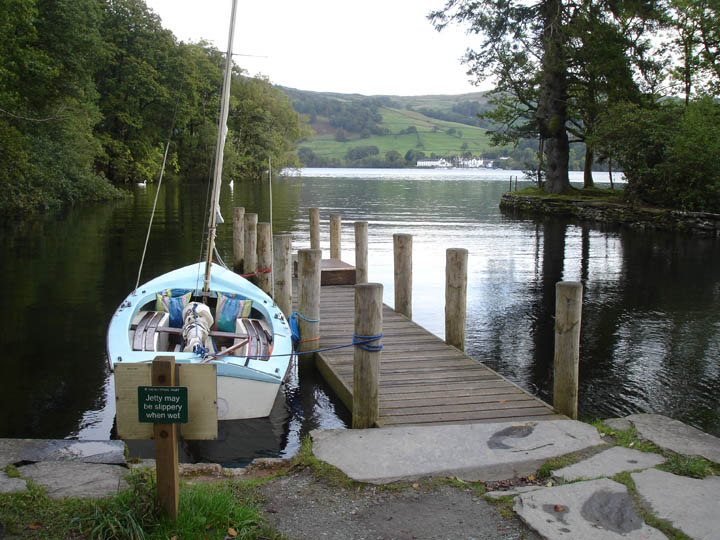
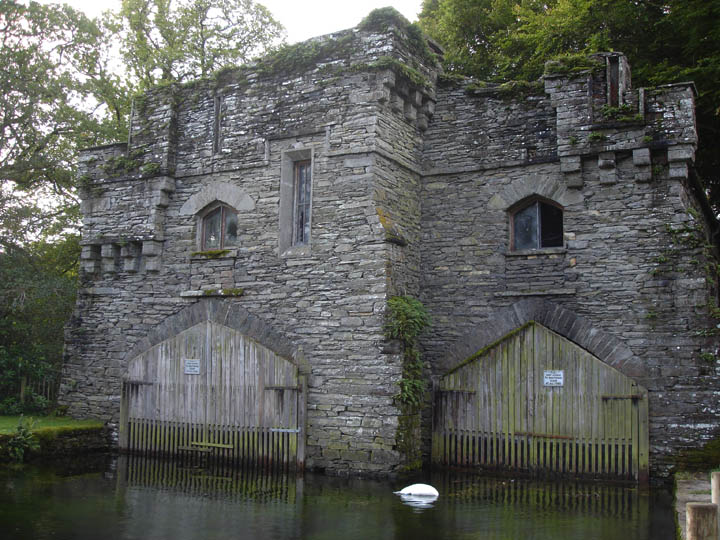

Poirot & Hasting take a holiday in 'Whitcombe' staying at the Midland Hotel in Morecambe, Lancashire. Designed by architect Oliver Hill, it was his second 'Moderne' commission following that of Joldwynds (which featured in both 'The Disappearance of Mr. Davenheim' and 'The Theft of the Royal Ruby'). Sadly once neglected, now mercifully restored.

Staircase inside the Midland Hotel.

Piano bar at the Midland Hotel.

The Swine Market at Kirkby Lonsdale, Cumbria stood in for 'the Coach Station'.

Bell Clothing portrayed an antique shop in the episode.

The Market Square in Kirkby Lonsdale, Cumbria.

Wray Castle in Ambleside, Cumbria is used as the 'Lake Castle Hotel'.

Wray jetty on Lake Windermere where the ferry docks.

Wray Castle boathouse.